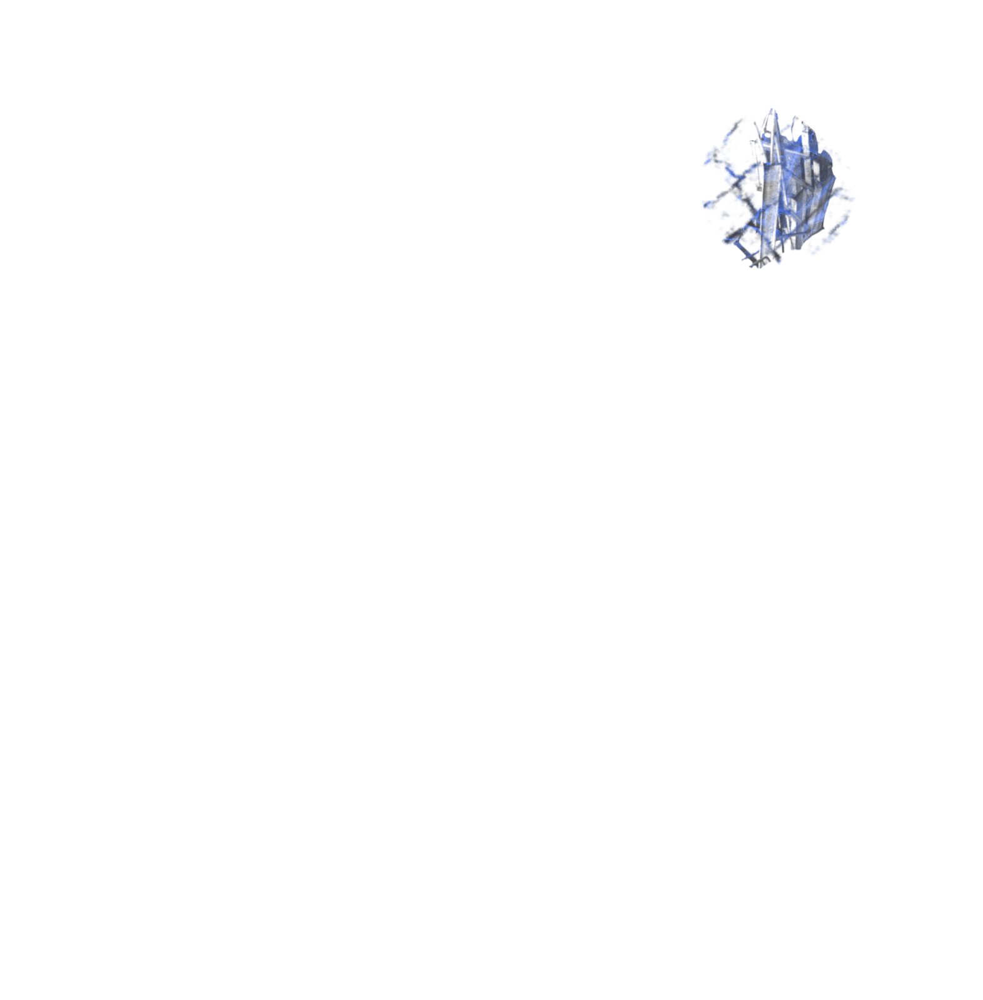
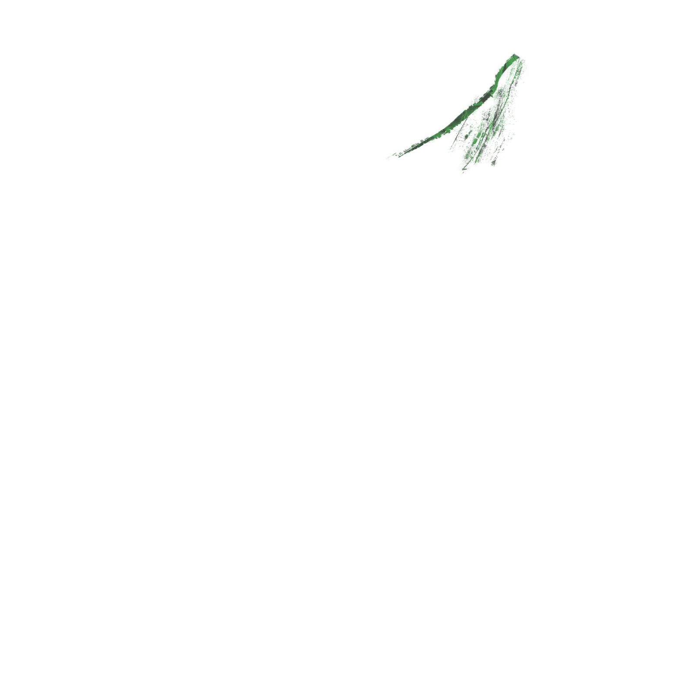

Então vieram os macacos e disseram a Exu...
Você deve percorrer todo o mundo
e colecionar 16 histórias
para cada um dos cocos
que tem na mão.
Cada história tem sua sabedoria: são oráculos, conselhos para ajudar aos homens.
Exu fez o que os macacos lhe dissera e voltou ao Orun, o céu dos Orixás, e mostrou a todos os cocos e as histórias.
Os Orixás gostaram muito daquilo!
Ensinaram então aos humanos a arte
de ler o futuro nos cocos de dendê.
as pessoas voltaram a fazer
sacrifícios aos orixás
em troca da sabedoria de Ifá!
E os Orixás ficaram felizes novamente!

Okaran Méjì
Exu entrega aos homens o oráculo de Ifá em troca de sacrifícios.
Etaogundá Méjì
Ogum ensina que a partilha é o melhor caminho para a riqueza.
Bójú ò bá róhun bí okùn bí okùn
Kò leè róhun bíide bíide
A díá fún Wobúwobú Olókò
A díá fún Gbónbúgbónbú Olókò
Wobúwobú ló rí ibú
Béè ni ò ní igbá
Gbónbúgbónbú n tiè
Òun ní igbá
Ìgbà tí ón dé pèrèpèrè odò Ìjámò
Wobúwobú n wo inú ibú
Ó ríbú ti n mì lègbè
Wobúwobú ní háà
Ejá n be nínú ibú yìí
Òkànràn di MGbónbúgbónbú dé ibè
Òún mú igbáa tiè lówó
Bóo làwó ó ti wáá se?
Gbónbúgbónbú ní kó jé kì àwón ó gbón on
Wón bá gbóndò
Ti odò fi dé ìsàlè
Eyo eja kan ni wón rí pa
Bí ón ti gòkè odò
Ni ón bá fijà peéta
Ení ó gbòn ibú lóun lòún ó mùú eja
Ení ó rí ibú lòún lòún ó mùú eja
Wón bá takú mó araa won lówó
Ògún sì lo igbó méje èlùjù méje
Òún n padàá bò wálé
Ó bá bá won lénu ìjà
Wón bá kéjo wón rò fún Ògún
Wobúwobú lóun lòún ríbú
Lóòótó lòun ó ní Ògbúa
Gbónbúgbónbú lóun lòón ni ògbún
Tóun jé kí àwón ó gbón odò
Bí ò bá sí Ògbún òun
Àwon ò leè peja
Wobúwobú ní bóun ò bá wáá ri ibú
Sáa lè peja lófuruufú?
Ògún ní wón ó mó jà mó
Ó ní kí wón ó dijú
Wón bá di ojúu won
Ó ní kí enìkan ó gbá Orí mú
Kí enìkan ó gbá ìrù mú
Ògún bá yo àdá è lákò
Ló bá gé eja sí méjì, féú
Ení ó mú agbon Orí
Ìrù so mó o
Enì ó mú agbon ìrù
Orí so mó o
Ejá bá di méjì
Wón ní ‘Ògún mo dá eja sí méjìi’!
N ni wón wá n jó ni wón n yò
Wón n yin àwon Babaláwo
Àwon Babaláwo n yin Ifá
Wón ní béè làwon Babaláwo tàwón wí
Bójú ò bá róhun bí okùn bí okùn
Kò leè róhun bíide bíide
A díá fún Baba Aníbú mó lógbùún
A díá fún Baba Alógbùún mó níbú
Níjóo wón n lo rèé gbóndò kan
Ará roni ò
Ará roni
Ìgbà Ògún déjaá méjì
Ará roni.
Dois humanos foram em busca de comida num grande lago...
Percebendo o seu tamanho e movimento, os humanos decidiram esvaziar toda a lagoa na tentativa de levar todos os peixes...
Após encontrar apenas um peixe, os humanos travaram uma luta para saber quem iria ficar com o único peixe do lago.
Ogum questiona os humanos...
Não lutem...
A briga não é o caminho da partilha.
Fechem os olhos...
Segurem o peixe na cabeça e na cauda,
Vocês irão entender...
Com o seu facão, Ogum multiplicou o único peixe...
Ogum ensinou aos humanos
que na vida não existe apenas uma opção.
A vida se tornou mais fácil
depois que Ogum dividiu os peixes
